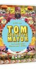
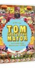

Tom Goes to the Mayor
Stephen Klancher
...has seen 1
...has seen 0 hours
...has not seen 0.5 hours

Timeline
First Unseen:
WW Laserz (# 2)
...has seen 1
...has seen 0 hours
...has not seen 0.5 hours
Timeline
First Unseen:
WW Laserz (# 2)

Tom Goes to the MayorStephen Klancher ...has seen 1 ...has seen 0 hours ...has not seen 0.5 hours Timeline First Unseen: WW Laserz (# 2)  Watched an episode not known by IMDb? |